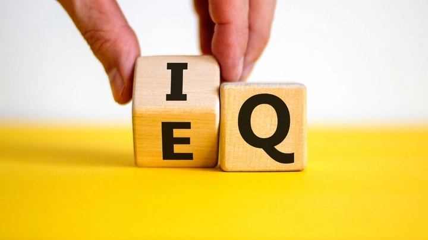

Trí tuệ cảm xúc (EQ) và kỹ năng giao tiếp xã hội
Khoa học và thực tiễn đã chứng minh được rằng thành công không chỉ dựa vào kiến thức chuyên môn hay năng lực kỹ thuật mà còn phụ thuộc rất nhiều vào khả năng quản lý cảm xúc và giao tiếp hiệu quả với người khác. Trí tuệ cảm xúc (EQ) và kỹ năng giao tiếp xã hội là hai yếu tố quan trọng giúp con người xây dựng mối quan hệ lành mạnh, giải quyết xung đột và đạt được mục tiêu cá nhân lẫn nghề nghiệp.
Một người có EQ cao không chỉ nhận biết và kiểm soát được cảm xúc bản thân, mà còn thấu hiểu cảm xúc người khác, từ đó tạo ra sự kết nối sâu sắc và giao tiếp hiệu quả. Bài viết này sẽ phân tích chi tiết về EQ, kỹ năng giao tiếp xã hội và cách phát triển chúng để nâng cao chất lượng cuộc sống và công việc.
Bạn đã thật sự hiểu về Trí tuệ Cảm xúc EQ và kỹ năng giao tiếp xã hội chưa? Hãy cùng TrithucWorld tìm hiểu về chúng thông qua bài viết sau.
1. Khái niệm trí tuệ cảm xúc (EQ)
Trí tuệ cảm xúc (EQ) là khả năng nhận biết, hiểu và quản lý cảm xúc của chính bản thân cũng như khả năng nhận thức và đồng cảm với cảm xúc của người khác. Khái niệm EQ được phổ biến bởi Daniel Goleman vào những năm 1990 và nhanh chóng trở thành một trong những yếu tố quan trọng quyết định thành công trong công việc và đời sống.
Một người có EQ cao không chỉ biết cách kiểm soát cơn giận, sự căng thẳng hay lo lắng, mà còn có khả năng duy trì trạng thái tâm lý tích cực trong những tình huống khó khăn.

EQ giúp con người ra quyết định khôn ngoan hơn, xây dựng mối quan hệ vững chắc và thích ứng linh hoạt với môi trường xã hội đa dạng. Trong bối cảnh hiện nay, nơi mà môi trường làm việc và các mối quan hệ xã hội ngày càng phức tạp, EQ trở thành kỹ năng thiết yếu để duy trì hiệu suất cá nhân và tinh thần đồng đội.
2. Các thành phần chính của EQ
EQ được chia thành năm thành phần cơ bản:
Thứ nhất là nhận diện cảm xúc bản thân, tức khả năng hiểu rõ cảm xúc của chính mình khi vui, buồn, giận hay lo lắng.
Thứ hai là quản lý cảm xúc, tức kiểm soát phản ứng cảm xúc, duy trì bình tĩnh và thái độ tích cực trong mọi tình huống.
Thứ ba là động lực bản thân, giúp duy trì quyết tâm và hướng đến mục tiêu dài hạn.
Thứ tư là đồng cảm, tức khả năng hiểu và chia sẻ cảm xúc của người khác.
Cuối cùng là kỹ năng xã hội, nghĩa là sử dụng EQ để xây dựng mối quan hệ, thuyết phục, lãnh đạo và giải quyết xung đột. Khi các thành phần này được phát triển đồng bộ, một người sẽ dễ dàng điều hướng cảm xúc và tương tác xã hội hiệu quả hơn, đồng thời tạo ra môi trường giao tiếp tích cực xung quanh.
3. Khái niệm và vai trò của kỹ năng giao tiếp xã hội
Kỹ năng giao tiếp xã hội là khả năng truyền đạt thông tin, ý tưởng và cảm xúc một cách hiệu quả với người khác, đồng thời hiểu và phản hồi thông điệp từ họ. Giao tiếp xã hội không chỉ dừng lại ở việc nói chuyện mà còn bao gồm lắng nghe, quan sát, đọc hiểu ngôn ngữ cơ thể, xử lý xung đột và thể hiện sự tôn trọng đối với đối phương.
Trong công việc, kỹ năng này giúp xây dựng mối quan hệ đồng nghiệp tốt, thuyết phục khách hàng và lãnh đạo đội nhóm hiệu quả. Trong đời sống cá nhân, kỹ năng giao tiếp xã hội hỗ trợ việc duy trì quan hệ bạn bè, gia đình và cộng đồng.
EQ và kỹ năng giao tiếp xã hội luôn gắn kết chặt chẽ, vì khả năng hiểu và quản lý cảm xúc của bản thân sẽ quyết định cách bạn truyền tải thông điệp và phản ứng với người khác.
4. Mối liên hệ giữa EQ và kỹ năng giao tiếp
EQ đóng vai trò nền tảng để nâng cao kỹ năng giao tiếp xã hội. Một người có EQ cao thường lắng nghe tốt hơn, thấu hiểu nhu cầu và cảm xúc của người khác, từ đó phản hồi một cách khéo léo và hiệu quả.
Đồng thời, EQ giúp con người kiểm soát cảm xúc tiêu cực như giận dữ, lo lắng hay bất mãn, tránh gây mâu thuẫn hoặc làm tổn thương đối phương trong giao tiếp.
Nhờ khả năng đồng cảm, họ dễ dàng xây dựng lòng tin và kết nối sâu sắc, tạo ra môi trường giao tiếp tích cực. Ngược lại, kỹ năng giao tiếp hiệu quả cũng giúp EQ phát triển, vì quá trình tương tác xã hội cung cấp cơ hội nhận biết và điều chỉnh cảm xúc trong thực tế. Sự kết hợp giữa EQ và kỹ năng giao tiếp là chìa khóa để thành công trong cả đời sống cá nhân lẫn nghề nghiệp.
5. Nhận diện và quản lý cảm xúc bản thân
Khả năng nhận diện cảm xúc bản thân là bước đầu tiên để phát triển EQ. Nó giúp bạn hiểu rõ mình đang cảm thấy gì, tại sao lại có cảm xúc đó và cảm xúc đó ảnh hưởng đến hành vi như thế nào.
Khi nhận diện được cảm xúc, bạn có thể quản lý cảm xúc bằng cách kiểm soát phản ứng, duy trì bình tĩnh và chọn cách ứng xử phù hợp. Ví dụ, khi tức giận trong một cuộc họp, thay vì bộc lộ cảm xúc ngay lập tức, bạn có thể hít thở sâu, suy nghĩ về vấn đề khách quan và trả lời một cách bình tĩnh.
Quản lý cảm xúc hiệu quả giúp giảm stress, nâng cao sự tự tin và cải thiện chất lượng giao tiếp. Ngoài ra, việc ghi nhận cảm xúc mỗi ngày qua nhật ký hoặc tự phản ánh cũng là cách rèn luyện khả năng nhận diện và quản lý cảm xúc lâu dài.
6. Phát triển khả năng đồng cảm
Đồng cảm là khả năng thấu hiểu và chia sẻ cảm xúc của người khác. Người có khả năng đồng cảm cao dễ dàng nắm bắt tâm trạng, nhu cầu và quan điểm của đối phương, từ đó xây dựng mối quan hệ bền vững.
Đồng cảm không chỉ giúp tạo niềm tin mà còn giúp xử lý xung đột hiệu quả, vì bạn có thể đặt mình vào vị trí người khác để nhìn nhận vấn đề. Để phát triển đồng cảm, bạn có thể lắng nghe chủ động, quan sát ngôn ngữ cơ thể, đặt câu hỏi mở và tránh phán xét.
Khi đồng cảm được kết hợp với kỹ năng giao tiếp, bạn sẽ truyền tải thông điệp một cách chân thành, dễ được người khác chấp nhận và đồng hành cùng bạn trong các mục tiêu chung.
7. Kỹ năng lắng nghe tích cực
Lắng nghe tích cực là kỹ năng quan trọng trong giao tiếp xã hội, giúp bạn hiểu đúng thông điệp và nhu cầu của đối phương. Lắng nghe tích cực không chỉ là nghe bằng tai, mà còn là quan sát ngôn ngữ cơ thể, giọng điệu và cảm xúc.
Khi lắng nghe, bạn có thể sử dụng các phản hồi như gật đầu, lặp lại ý chính, đặt câu hỏi để làm rõ thông tin. Lắng nghe tích cực giúp giảm hiểu lầm, tăng sự tôn trọng và xây dựng mối quan hệ hiệu quả.
Kết hợp với EQ, lắng nghe tích cực giúp bạn nhận biết cảm xúc tiềm ẩn của đối phương và điều chỉnh phản ứng của bản thân, từ đó giao tiếp khéo léo và đạt được kết quả mong muốn trong mọi tình huống xã hội.
8. Giao tiếp phi ngôn từ và tín hiệu cơ thể
Trong giao tiếp xã hội, phi ngôn từ chiếm phần lớn ảnh hưởng tới cách người khác tiếp nhận thông điệp. Cử chỉ, ánh mắt, giọng điệu, biểu cảm khuôn mặt và tư thế cơ thể đều truyền tải thông tin quan trọng, thậm chí vượt lên lời nói.
Ví dụ, ánh mắt chăm chú thể hiện sự quan tâm, nụ cười tạo thiện cảm, tư thế mở và thoải mái giúp người khác dễ chia sẻ. Một người có EQ cao sẽ nhận biết và điều chỉnh tín hiệu phi ngôn từ của mình, đồng thời đọc hiểu tín hiệu từ người khác để phản ứng phù hợp. Kỹ năng này giúp giao tiếp hiệu quả hơn, tạo ấn tượng tích cực và xây dựng mối quan hệ bền vững trong cả môi trường cá nhân lẫn công việc.
9. Giải quyết xung đột và đàm phán hiệu quả
Xung đột là điều không thể tránh khỏi trong mọi mối quan hệ xã hội. Người có EQ cao sử dụng khả năng kiểm soát cảm xúc và đồng cảm để giải quyết xung đột một cách khéo léo. Họ giữ bình tĩnh, lắng nghe đối phương, nhận diện nhu cầu thật sự và tìm ra giải pháp win-win.
Trong đàm phán, EQ giúp bạn hiểu rõ động cơ và giới hạn của đối tác, từ đó điều chỉnh cách tiếp cận, đặt câu hỏi hợp lý và thuyết phục hiệu quả. Kết hợp với kỹ năng giao tiếp, việc xử lý xung đột không còn là trở ngại mà trở thành cơ hội để xây dựng lòng tin, củng cố mối quan hệ và tạo môi trường hợp tác lâu dài.
10. Cách rèn luyện và nâng cao EQ trong đời sống hằng ngày
Phát triển EQ và kỹ năng giao tiếp xã hội là quá trình liên tục. Bạn có thể tự rèn luyện bằng cách ghi nhận cảm xúc hàng ngày, phản ánh hành vi, thực hành đồng cảm và lắng nghe tích cực trong các mối quan hệ. Học hỏi từ trải nghiệm, quan sát người khác có EQ cao và tham gia các khóa đào tạo về giao tiếp cũng là cách nâng cao kỹ năng.
Ngoài ra, việc duy trì sức khỏe tinh thần, tập thiền hay các hoạt động mindfulness giúp cải thiện khả năng kiểm soát cảm xúc. Khi EQ được phát triển bền vững, bạn không chỉ giao tiếp hiệu quả, mà còn tạo ra môi trường tích cực xung quanh, thúc đẩy thành công trong học tập, công việc và đời sống cá nhân.